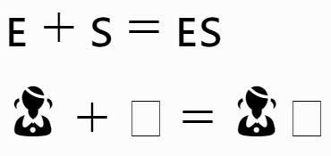
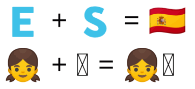
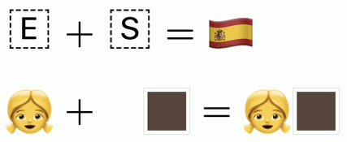

Unicode permite definir nuevos caracteres combinando varios caracteres consecutivamente. Estas combinaciones de caracteres se denominan secuencias Unicode. En esta lección se explican las reglas de creación de las secuencias Unicode.
Esta lección es la tercera lección de un grupo de tres lecciones que se recomienda leer en el siguiente orden:
Como complemento a las lecciones anteriores, las páginas siguientes muestran diferentes símbolos Unicode agrupados por temas:
 Esta página está en elaboración. Faltan bastantes descripciones de tipos de secuencias.
Esta página está en elaboración. Faltan bastantes descripciones de tipos de secuencias.
Las fichas siguientes muestran los dibujos (emoticonos, emojis y otros) correspondientes a secuencias de Unicode. Para cada secuencia se muestra:
El carácter ZWJ (Zero-Width Joiner, es decir Conector sin anchura) es el carácter Unicode U+200D. Se introdujo para indicar que dos o más caracteres se deben escribir en forma conectada, y se utiliza de forma habitual en escrituras como la árabe o las indias. El carácter ZWJ se escribe entre los dos caracteres que se quieren considerar conjuntamente.
Posteriormente, el uso del carácter ZWJ se ha extendido para otros usos, permitiendo unir caracteres para producir un nuevo carácter. Es importante señalar que los navegadores en algunos casos muestran el resultado aunque se omita el carácter ZWJ, simplemente escribiendo los caracteres uno a continuación del otro, sin separación.
Por ejemplo, los pictogramas de las banderas del mundo se pueden expresar combinado dos caracteres Unicode del rango U+1F1E6 al U+1F1FF (que representan los caracteres de la A a la Z, pero para su uso como indicadores regionales). Los dos caracteres a elegir en cada caso son los que corresponden al código ISO 3166-1 del país. Por ejemplo, como el código ISO 3166-1 de España es ES, al unir los caracteres U+1F1EA (letra E) y U+1F1F8 (letra S) se mostrará la bandera de España (aunque el resultado depende del sistema operativo y del navegador utilizado [completar]).
Este mismo sistema se utiliza para combinar dos o más emojis en un único emoji. Por ejemplo para mostrar personajes humanos con diferente color de piel. Combinando el carácter 👧 (chica) y el carácter 🏿 (modificador de emojis Fitzpatrick tipo 6, el más oscuro) se mostrará el emoji de una chica con la piel oscura.
Las secuencias de emojis de Unicode están definidas en el catálogo de secuencias emoji ZWJ.
El ejemplo siguiente contiene las dos secuencias mencionadas, para que usted mismo compruebe cómo se ven en su navegador y sistema operativo:
<p style="font-size: 4rem;">🇪 + 🇸 = 🇪‍🇸</p>
<p style="font-size: 4rem;">👧 + 🏿 = 👧‍🏿</p>
Las capturas siguientes muestran cómo se ve actualmente (octubre de 2019) el ejemplo anterior en Firefox en Windows 7, en Google Chrome en Windows 7 y en Windows 10:





Algunos caracteres Unicode tienen varias representaciones gráficas posibles. Para indicar la representación deseada se debe escribir a continuación del carácter Unicode uno de los dieciséis selectores de variación. Los selectores de variación son los caracteres Unicode U+FE00 a U+FE0F.
Una de las posibles variaciones en las representaciones gráficas es la variación texto/emoji. Algunos caracteres se pueden representar como texto (suelen ser unos dibujos esquemáticos en blanco y negro) o como emojis (suelen ser dibujos más elaborados y en color). Puede consultar la lista completa de caracteres con representacones texto/emoji.
La representación como texto se indica con el selector de variación VS15 (carácter U+FE0E) y la representación como emoji se indica con el selector de variación VS16 (carácter U+FE0E). Los caracteres que admiten ambas representaciones tienen una representación predeterminada.
Por ejemplo, los caracteres Unicode U+231A (reloj) y U26F9 (persona con balón) admiten las dos representaciones, pero tienen representaciones predeterminadas distintas:
U+231A U+FE0E
⌚︎
hexadecimal: ⌚︎
decimal: ⌚︎
watch (TEXTO)
U+231A U+FE0F
⌚️
hexadecimal: ⌚️
decimal: ⌚️
watch (EMOJI)
U+26F9 U+FE0E
⛹︎
hexadecimal: ⛹︎
decimal: ⛹︎
person with ball (TEXTO)
U+26F9 U+FE0F
⛹️
hexadecimal: ⛹️
decimal: ⛹️
person with ball (EMOJI)
 Por escribir.
Por escribir.
Unicode permite dibujar los emojis correspondientes a las banderas de los países del mundo escribiendo su código de dos letras ISO 3166-1 mediante los caracteres Unicode denominados letras para símbolos de indicadores regionales, que se extienden del carácter U+1F1E6 (letra A) a U+1F1FF (letra Z).
Por ejemplo, para mostrar la bandera de España se deben escribir (sin espacios entre ellos) los carácteres de indicadores regionales E + S (U+1F1EA U+1F1F8):
Nota: Actualmente (noviembre de 2019), Windows 10 no muestra las banderas y en su lugar muestra las letras correspondientes al código de dos letras (ES en el caso de España).
Unicode permite dibujar los emojis correspondientes a las familias formadas por uno o dos padres o madres y uno o dos hijos o hijas mediante los caracteres U+1F468 (hombre 👨), U+1F469 (mujer 👩), U+1F466 (niño 👦) y U+1F467 (niña 👧), uniéndolos con caracteres ZWJ (U+200D, Zero-Width Joiner), sin espacios entre ellos. Las únicas restricciones es que los padres deben escribirse antes que los hijos, que si los padres son un hombre y una mujer, el hombre debe escribirse antes que la mujer y que si los hijos son un niño y una niña, la niña debe escribirse antes que el niño.
Por ejemplo, para mostrar la familia mostrada por un padre y una madre y un niño y una niña se debe escribir la secuencia Hombre + Mujer + Niña + Niño (U+1F468 U+200D U+1F469 U+200D U+1F467 U+200D U+1F466)
👨 + 👩 + 👧 + 👦 = 👨👩👧👦
U+1F468 U+200D U+1F469 U+200D U+1F467 U+200D U+1F466
👨👩👧👦 👨👩👧👦
hexadecimal: 👨‍👩‍👧‍👦
decimal: 👨‍👩‍👧‍👦
family: man, woman, girl, boy
Nota: Actualmente (noviembre de 2019), Windows 10 muestra emojis aunque no se respeten las restricciones (escribir la mujer antes del hombre o el niño antes de la niña), pero yo diría que no es correcto.
Unicode permite dibujar los emojis correspondientes a las parejas de enamorados escribiendo los caracteres U+1F468 (hombre 👨) y/o U+1F469 (mujer 👩) intercalados con los caracteres U+2764 U+FE0F (corazón ❤ y selector de variación 16, que muestra el corazón en rojo ❤️), uniéndolos con caracteres ZWJ (U+200D, Zero-Width Joiner), sin espacios entre ellos. La única restricción es que la pareja está formada por un hombre y una mujer, el hombre debe escribirse antes que la mujer.
Por ejemplo, para mostrar dos hombres enamorados se debe escribir la secuencia Hombre + Corazón VS16 + Hombre (U+1F468 U+200D U+2764 U+FE0F U+200D U+1F468):
👨 + ❤️ + 👨 = 👨❤️👨
U+1F468 U+200D U+2764 U+FE0F U+200D U+1F468
👨❤️👨 👨❤️👨
hexadecimal: 👨‍❤️‍👨
decimal: 👨‍❤️‍👨
couple with heart: man man
Nota: Actualmente (noviembre de 2019), Windows 10 muestra el emoji aunque se omita el selector de variación 16 U+FE0F, pero no sé si es correcto omitirlo.
Unicode permite dibujar los emojis correspondientes a las parejas de enamorados besándose escribiendo los caracteres U+1F468 (hombre 👨) y/o U+1F469 (mujer 👩) intercalados con los caracteres U+2764 U+FE0F (corazón ❤ y selector de variación 16, que muestra el corazón en rojo ❤️) y U+1F48B (beso 💋), uniéndolos con caracteres ZWJ (U+200D, Zero-Width Joiner), sin espacios entre ellos. La única restricción es que la pareja está formada por un hombre y una mujer, la mujer debe escribirse antes que el hombre.
Por ejemplo, para mostrar un hombre y una mujer enamorados besándose se debe escribir la secuencia Mujer + Corazón VS16 + Beso + Mujer (U+1F469 U+200D U+2764 U+FE0F U+200D U+1F48B U+200D U+1F468):
👩 + ❤️ + 💋 + 👨 = 👩❤️💋👨
U+1F469 U+200D U+2764 U+FE0F U+200D U+1F48B U+200D U+1F468
👩❤️💋👨 👩❤️💋👨
hexadecimal: 👩‍❤️‍💋‍👨
decimal: 👩‍❤️‍💋‍👨
kiss: woman man
Nota: Actualmente (noviembre de 2019), Windows 10 muestra el emoji aunque se omita el selector de variación 16 U+FE0F, pero no sé si es correcto omitirlo.
Unicode permite dibujar los emojis correspondientes a profesiones o actividades con personajes masculinos o femeninos, pero de varias maneras distintas.
Por ejemplo, para mostrar un hombre o una mujer cocineros se debe escribir la secuencia Hombre/Mujer + Sartén (U+1F468/U+1F469 U+200D U+1F373):
👩 + 🍳 = 👩🍳
👨 + 🍳 = 👨🍳
Por ejemplo, para mostrar un hombre o una mujer médicos se debe escribir la secuencia Hombre/Mujer + Vara de Esculapio VS16 (U+1F468/U+1F469 U+200D U+2695 U+FE0F). En este caso el carácter U+2695, la vara de esculapio, tiene dos versiones:
👨 + ⚕️ = 👨⚕️
👩 + ⚕️ = 👩⚕️
U+1F468 U+200D U+2695 U+FE0F
👨⚕️ 👨⚕️
hexadecimal: 👨‍⚕️
decimal: 👨‍⚕️
man health worker
U+1F469 U+200D U+2695 U+FE0F
👩⚕️ 👩⚕️
hexadecimal: 👩‍⚕️
decimal: 👩‍⚕️
woman health worker
Nota: En Windows 10 el emoji se muestra aunque se omita el selector de variación 16 U+FE0F, pero no sé si es correcto omitirlo.
Por ejemplo, para mostrar un hombre o una mujer caminando se debe escribir la secuencia Peatón + Masculino/Femenino VS16 (U+1F6B6 U+200D U+2640/U+2642 U+FE0F). En este caso los caracteres U+2640 y U+2641, los signos femeninos y masculinos, tiene dos versiones:
🚶 + ♀️ = 🚶♀️
🚶 + ♂️ = 🚶♂️
U+1F6B6 U+200D U+2640 U+FE0F
🚶♀️ 🚶♀️
hexadecimal: 🚶‍♀️
decimal: 🚶‍♀️
woman walking
U+1F6B6 U+200D U+2642 U+FE0F
🚶♂️ 🚶♂️
hexadecimal: 🚶‍♂️
decimal: 🚶‍♂️
man walking
Nota: Actualmente (noviembre de 2019), Windows 10 no distingue entre las versiones texto y emoji de los caracteres U+2640 y U+2642.
Por ejemplo, para mostrar un hombre o una mujer botando una pelota se debe escribir la secuencia Individuo con pelota VS16 + Masculino/Femenino VS16 (U+26F9 U+FE0F U+200D U+2640/U+2642 U+FE0F). En este caso el carácter U+26F9, Individuo con pelota, tiene dos versiones:
⛹ + ♀️ = ⛹️♀️;
⛹ + ♂️ = ⛹️♂️
U+26F9 U+FE0F U+200D U+2640 U+FE0F
⛹️♀️ ⛹️♀️
hexadecimal: ⛹️‍♀️
decimal: ⛹️‍♀️
woman bouncing ball
U+26F9 U+FE0F U+200D U+2642 U+FE0F
⛹️♂️ ⛹️♂️
hexadecimal: ⛹️‍♂️
decimal: ⛹️‍♂️
man bouncing ball
Nota: Actualmente (noviembre de 2019), Windows 10 no distingue entre las versiones texto y emoji de los caracteres que aparecen en este tipo de combinaciones (U+26F9, U+1F3CB, U+1F3CC, etc.).
{kind=link}
{kind=link}
{kind=link}
{kind=link}
{kind=link}
{kind=link}
{kind=link}
{kind=link}
{kind=link}
{kind=link}
{kind=link}
{kind=link}
{kind=link}
{kind=link}